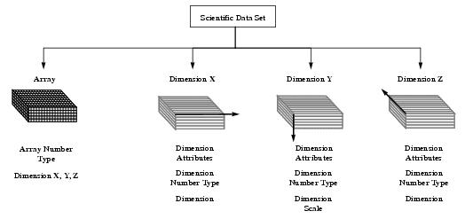

HDF User’s Guide
Version 4.2r4[Top] [Prev][Next]
|
|
HDF User’s GuideVersion 4.2r4 |
[Top] [Prev][Next] |
Chapter 12 -- Single-File Scientific Data Sets (DFSD API)
12.1 Chapter Overview
The DFSD interface is one of two interfaces in the HDF library that support the scientific data model. With the release of HDF version 3.3, the multifile SD interface described in Chapter 3, Scientific Data Sets (SD API), was made available. Generally, the SD interface should be used instead of the DFSD interface.
12.2 The DFSD Scientific Data Set Data Model
The scientific data set, or SDS, data model supports four primary data objects: arrays, dimensions, dimension scales, and dimension attributes. As in the multifile SD SDS model, the fundamental object of the data model is the SDS array. Unlike the SD multifile SDS model the DFSD SDS model has, in addition to dimension attributes, attributes that refer to the SDS array itself.
FIGURE 12a The Contents of a Three-Dimensional DFSD Scientific Data Set12.2.1 Required DFSD SDS Objects
The only required objects in the DFSD SDS model are the array and the data type of the array data. Without this information, the data set is inaccessible. Required objects are created by the library using the information supplied at the time the SDS is defined.
Descriptions of these objects are in Chapter 3, Scientific Data Sets (SD API).
12.2.1.1 Dimensions
Unlimited dimensions, supported in the multifile SD SDS model, aren't supported in the single-file DFSD SDS model.
12.2.2 Optional DFSD SDS Objects
There are two types of optional objects available for inclusion in an SDS: dimension scales and attributes. Optional objects are only created when specified by the calling program.
12.2.2.1 Dimension Scales
Conceptually, a dimension scale is a series of numbers placed along a dimension to demarcate intervals in a data set. They are assigned one per dimension. Structurally, each dimension scale is a one-dimensional array with size and name equal to its assigned dimension name and size.
12.2.2.2 Predefined Attributes
Predefined attributes are attributes that have reserved labels and in some cases predefined number types. They are described in Chapter 3, Scientific Data Sets (SD API).
12.3 The Single-File Scientific Data Set Interface
The HDF library currently contains several routines for storing scientific data sets in the HDF format. DFSDadddata, DFSDputdata, and DFSDgetdata perform data I/O and by default assume that all scientific data is uncompressed 32-bit floating-point data stored in row-major order. DFSD library routines also read and write subsets and slabs of data, set defaults, determine the number of data sets in a file, and inquire about or assigning reference numbers before reading or writing data.
12.3.1 DFSD Library Routines
The names of the C routines in the DFSD library are prefaced by "DFSD" and the names of the equivalent FORTRAN-77 functions are prefaced by "ds". They are categorized as follows:
- Write routines create new data sets and add slabs to existing data sets.
- Read routines read whole scientific data sets.
- Slab routines read and write subsets and slabs of scientific data.
- Data set attribute routines read and write the predefined string and value attributes assigned to data sets.
- Dimension attribute routines read and write the predefined string and value attributes assigned to dimensions.
DFSD library routines are more explicitly defined in Table 12A and on their respective pages in the HDF Reference Manual.
TABLE 12A DFSD Library Routines12.3.2 File Identifiers in the DFSD Interface
File identifiers are handled internally by each routine and access to a file is granted simply by providing a filename. As the file identifier is handled by the function call, the calling program need not keep track of how to open and close files.
12.4 Writing DFSD Scientific Data Sets
The DFSD programming model for writing an SDS to an HDF file involves the following steps:
These steps are performed for every data set written to a file. However, it is not always necessary to define data set options for every write operation as setting an option places information about the data set in a structure in primary memory. This information is retained until explicitly altered by another set call.
12.4.1 Creating a DFSD Scientific Data Set: DFSDadddata and DFSDputdata
To define and write a single SDS, the calling program must contain of of the following routines:
DFSDadddata appends data to a file when given an existing file name and creates a new file when given a unique file name. DFSDputdata replaces the contents of a file when given an existing file name and creates a new file when given a unique file name. To avoid accidentally overwriting data in a file, the use of DFSDadddata is recommended.
DFSDadddata and DFSDputdata have four parameters: filename, rank, dim_sizes, and data. In both routines, the data set is written to the file specified by the filename parameter. The total number of dimensions in the array and the size of each dimension are passed in the rank and dim_sizes parameters. A pointer to the data or slab of data written to the named file is passed in the data parameter.
The parameters of DFSDadddata and DFSDputdata are further described in the following table.
TABLE 12B DFSDadddata and DFSDputdata Parameter List12.4.2 Specifying the Data Type of a DFSD SDS: DFSDsetNT
The default data type for scientific data is
DFNT_FLOAT32. To change the default setting, the calling program must contain calls to the following routines:DFSDsetNT defines the data type for all subsequent DFSDadddata and DFSDputdata calls until it is changed by a subsequent call to DFSDsetNT or reset to the default by DFSDclear. DFSDsetNT's only parameter is the data type.
EXAMPLE 1. Creating and Writing to a DFSD Scientific Data SetIn the following code examples, DFSDadddata is used to write an array of 64-bit floating-point numbers to a file named "Example1.hdf". Although the DFSDsetNT function call is optional, it is included here to demonstrate how to override the float32 default.
C:#include "hdf.h" #define LENGTH 3 #define HEIGHT 2 #define WIDTH 5 main( ) { /* Create data array - store dimensions in array 'dims' */ static float64 scien_data[LENGTH][HEIGHT][WIDTH] = { 1., 2., 3., 4., 5., 6., 7., 8., 9.,10., 11.,12.,13.,14.,15., 16.,17.,18.,19.,20., 21.,22.,23.,24.,25., 26.,27.,28.,29.,30. }; intn status; int32 dims[3] = {LENGTH, HEIGHT, WIDTH}; /* Set number type to 64-bit float */ status = DFSDsetNT(DFNT_FLOAT64); /* Write the data to file */ status = DFSDadddata("Example1.hdf", 3, dims, scien_data); }FORTRAN:PROGRAM WRITE SDS integer dsadata, dssnt, dims(3), status real*8 sci_data(5,2,3) C Create array called 'sci_data'; store dimensions in array 'dims'. data sci_data/ 1., 2., 3., 4., 5., $ 6., 7., 8., 9.,10., $ 11.,12.,13.,14.,15., $ 16.,17.,18.,19.,20., $ 21.,22.,23.,24.,25., $ 26.,27.,28.,29.,30./ data dims /3,2,5/ C Set number type to 64-bit float status = dssnt(6) C Write the data to file status = dsadata('Example1.hdf', 3, dims, sci_data) end12.4.3 Overwriting Data for a Given Reference Number: DFSDwriteref
DFSDwriteref is a highly specialized function call that overwrites data referred to by the specified reference number.
If DFSDwriteref is called with a reference number that doesn't exist, an error return value of -1 will be returned.
The following series of function calls should appear in your program:
If the filename passed to DFSDwriteref is different from the filename in the DFSDadddata or DFSDputdata routine calls, it will be ignored. The next scientific data set written, regardless of the filename, is assigned the reference number ref_number.
Care should be taken when using DFSDwriteref, as once the new data has been written the old data cannot be retrieved.
The parameters of DFSDwriteref are described in the following table.
TABLE 12C DFSDsetNT and DFSDwriteref Parameter List12.4.4 Writing Several Data Sets: DFSDsetdims and DFSDclear
The DFSD programming model for writing multiple data sets to an HDF file is identical to that for writing individual data sets. (Refer to Section 12.4 on page 388). To understand how multiple data sets are written to file, it is first necessary to take a closer look at each step of the programming model. First and most importantly, all DFSD routines that set a write option except DFSDsetNT and DFSDsetfillvalue add information to a special structure in primary memory. This information is used to determine how data is written to file for all subsequent write operations.
Information stored in primary memory is retained by the HDF library until explicitly changed by a call to DFSDsetdims or reset to
NULLby calling DFSDclear. DFSDsetdims and DFSDclear are used to prevent assignments of attributes created for a group of data sets to data sets outside the group. For more information on assigning attributes see Section 12.7.1 on page 398 and Section 12.7.3 on page 405.12.4.5 Preventing the Reassignment of DFSD Data Set Attributes: DFSDsetdims
Information stored in primary memory is retained by the HDF library until explicitly changed by a call to DFSDsetdims or reset to
NULLby calling DFSDclear. DFSDsetdims and DFSDclear are used to prevent assignments of attributes created for a group of data sets to data sets outside the group.The syntax of DFSDsetdims is the following:
DFSDsetdims is not used here to define the rank and dimension sizes to be used in the next operation, but to alert the DFSD interface to stop the automatic assignment of attributes to the data sets to be written to file. DFSDsetdims has two parameters: rank and dim_sizes. The rank of an array is the total number of dimensions in the array and the dimension sizes are the length of each individual dimension.
As a rule of thumb, DFSDsetdims should be called if any DFSDset* routine (DFSDsetNT, for example) has been called. This insures that all attribute values that have been reset will be assigned in future data set operations.
The parameters of DFSDsetdims are further defined in the following table.
TABLE 12D DFSDsetdims Parameter List12.4.6 Resetting the Default DFSD Interface Settings: DFSDclear
The syntax for DFSDclear is as follows:
The DFSDclear routine clears all interface settings defined by any of the DFSDset* routines (DFSDsetNT, DFSDsetfillvalue, DFSDsetdims, DFSDsetdatastrs, DFSDsetdatalengths, DFSDsetrange, DFSDsetcal, DFSDsetdimscale and DFSDsetdimstrs). After the DFSDclear has been called, calls to any of the DFSDset* routines will result in the corresponding value not being written. To write new values, call the appropriate DFSDset routine again.
TABLE 12E DFSDclear Parameter List
12.5 Reading DFSD Scientific Data Sets
The DFSD programming model for reading an SDS is also a two-step operation:
These steps are performed for every data set read. In some cases, calls to determine the data set definition may be reduced or avoided completely. For example, if the data set dimensions are known, the call that returns the data set dimensions may be eliminated.
12.5.1 Reading a DFSD SDS: DFSDgetdata
If the dimensions of the data set are known, DFSDgetdata is the only function call required to read an SDS. If the file is being opened for the first time, DFSDgetdata returns the first data set in the file. Any subsequent calls will return successive data sets in the file - data sets are read in the same order they were written. Normally, DFSDgetdims is called before DFSDgetdata so that space allocations for the array can be checked if necessary and the dimensions verified. If this information is already known, DFSDgetdims may be omitted.
To read an SDS of known dimension and number type, the calling program should include the following routine:
DFSDgetdata has four parameters: filename, rank, dim_sizes, and data. DFSDgetdata returns a data set specified by the parameter filename. The total number of dimensions is specified in rank and the size of each dimension is specified in dim_sizes. DFSDgetdata returns the array in data.
The parameters of DFSDgetdata are further defined in the following table.
TABLE 12F DFSDgetdata Parameter List12.5.2 Specifying the Dimensions and Data Type of an SDS: DFSDgetdims and DFSDgetNT
When DFSDgetdims is first called, it returns dimension information of the first data set. Subsequent calls will return this information for successive data sets. If you need to determine the dimensions or the data type of an array before reading it, call DFSDgetdims and DFSDgetNT. DFSDgetNT gets the data type (or, in HDF parlance, number type) of the data retrieved in the next read operation.
To determine the dimensions and data type of an array before attempting to read it, the calling program must include the following:
DFSDgetdims has four parameters: filename, rank, dim_sizes, and maxrank. The number of dimensions is returned in rank, the size of each dimension in the array dim_sizes, and the size of the array containing the dimensions sizes in max_rank. DFSDgetNT has only one parameter: number_type. As there is no way to specify the file or data set through the use of DFSDgetNT, it is only valid if it is called after DFSDgetdims.
The parameters of DFSDgetdims and DFSDgetNT are further defined in the following table.
TABLE 12G DFSDgetNT and DFSDgetdims Parameter ListEXAMPLE 2. Reading from a DFSD Scientific Data SetThe following examples search the file named "Example1.hdf" for the dimensions and data type of a DFSD array. Although use of DFSDgetdims and DFSDgetNT is optional, they are included here as a demonstration of how to verify the array dimensions and number type before reading any data. If the dimensions and type are known, only a call to DFSDgetdata is required.
C:#include "hdf.h" #define LENGTH 3 #define HEIGHT 2 #define WIDTH 5 main( ) { float64 scien_data[LENGTH][HEIGHT][WIDTH]; int32 number_type; intn rank, status; int32 dims[3]; /* Get the dimensions and number type of the array */ status = DFSDgetdims("Example1.hdf", &rank, dims, 3); status = DFSDgetNT(&number_type); /* Read the array if the dimensions are correct */ if (dims[0] <= LENGTH && dims[1] <= HEIGHT && dims[2] <= WIDTH) status = DFSDgetdata("Example1.hdf", rank, dims, scien_data); }FORTRAN:PROGRAM READ SDS integer dsgdata, dsgdims, dsgnt, dims(3), status integer rank, num_type real*8 sci_data(5, 2, 3) C Get the dimensions and number type of the array. status = dsgdims('Example1.hdf', rank, dims, 3) status = dsgnt(num_type) C Read the array if the dimensions are correct. if ((dims(1) .eq. 3) .and. (dims(2) .eq. 2) .and. + (dims(3) .eq. 5)) then status = dsgdata('Example1.hdf', rank, dims, sci_data) endif end12.5.3 Determining the Number of DFSD Data Sets: DFSDndatasets and DFSDrestart
DFSDgetdims and DFSDgetdata sequentially access DFSD data sets. By repeatedly calling either function, a program can step through an entire file by reading one data set at a time. However, before attempting to sequentially access all of the data sets in a file the total number of data sets in the file should be determined. To do so, the calling program must call the following routine:
Once the total number of data sets is known, a calling program can at any time, reset the current data set to the first data set in the file by calling the following routine:
Use of DFSDndatasets and DFSDrestart is optional, it is usually more convenient than cycling through the entire file one SDS at a time.
12.5.4 Obtaining Reference Numbers of DFSD Data Sets: DFSDreadref and DFSDlastref
As the HDF library handles the assignment and tracking of reference numbers, reference numbers must be explicitly returned. Obtaining the reference number is an operation best performed immediately after data set creation.
The DFSD interface uses the function DFSDreadref to initiate access to individual scientific data sets. DFSDreadref specifies the reference number of the next SDS to be read.
To access a specific SDS, the calling program must contain the following routines:
DFSDreadref has two parameters: filename and ref. DFSDreadref specifies the reference number of the object to be next operated on in the HDF file filename as ref. Determining the correct reference number is the most difficult part of this operation. As a result, DFSDreadref is often used in conjunction with DFSDlastref, which determines the reference number of the last data set accessed.
To syntax of DFSDadddata and DFSDlastref is:
DFSDputdata can also be used with DFSDlastref to obtain similar results. In any case, DFSDlastref can be used before any operation that requires identifying a scientific data set by reference number, as in the assignment of annotations and inserting data sets into vgroups. For more information about annotations and vgroups refer to, Chapter 10, Annotations (AN API) and Chapter 5, Vgroups (V API).
TABLE 12H DFSDreadref Parameter List12.6 Slabs in the DFSD Interface
To review, a slab is an n-dimensional array whose dimensions are smaller than those of the SDS array into which it is written or from which it is read.
12.6.1 Accessing Slabs: DFSDstartslab and DFSDendslab
There are two routines required for every DFSD slab operation - DFSDstartslab and DFSDendslab. DFSDstartslab is used to initialize the slab interface and to initiate access to new or existing data sets. DFSDendslab is used to terminate access to open data sets. DFSDstartslab must be called before any read or write slab operation and DFSDendslab must be called after the slab operation is completed. Both routines are required when reading and writing slabs.
Given a new filename, DFSDstartslab will create a new HDF file with the specified name. Given an existing filename, it will open the named file and append the new data set to the end of the file. Its only parameter is filename. DFSDendslab has no parameters and need only be called once per file. DFSDendslab will write any attributes defined immediately before the data set is created.
For more information on assigning attributes, see Section 12.7.3 on page 405.
TABLE 12I DFSDstartslab Parameter List
12.6.2 Writing Slabs: DFSDwriteslab
In the DFSD interface, writing an entire data set array and writing slabs follow the same programming model. The difference between the two is that calls to three routines is needed to write slabs, while a call to one routine is needed to write whole data sets.
More specifically, the DFSD programming model for writing slabs to an SDS is as follows:
In addition to writing slabs to both new and existing data sets, DFSDwriteslab can also perform the following sequential write operations:
Although not specifically defined as a slab routine, in practice, the DFSDsetfillvalue routine is used to initialize array elements between non-contiguous slab write operations. Setting a fill value places the same value in every array location before the first slab is written. Any hole created by non-contiguous writes can then be recognized by identifying the known fill value. The fill value must have the same number type as the values in the data set. For more information on fill values refer to Section 12.7.1.2 on page 399.
To write a slab to a new data set, the calling program must include the following routine calls:
C: status = DFSDsetdims(rank, dimsizes);
status = DFSDsetNT(num_type);
status = DFSDstartslab(filename);
status = DFSDwriteslab(start, stride, count, data);
status = DFSDendslab( );
FORTRAN: status = dssnt(num_type)
status = dssdims(rank, dim_sizes)
status = dssslab(filename)
status = dswslab(start, stride, edge, data)
status = dseslab( )
When writing slabs to an existing data set, it is impossible to change the number type, array boundaries, fill value, or calibration information. Consequently DFSDsetNT, DFSDsetdims, DFSDsetcal, and DFSDsetfillvalue will generate errors if called for an existing data set.
To write a slab to an existing data set, your program should include the following calls:
Because DFSDwriteslab offers no overwrite protection, the calling program is responsible for eliminating overlap when arranging slabs within the newly defined data set.
DFSDwriteslab has four arguments: start, stride, edge, and data. The arguments start, stride, and edge are defined as they are in the corresponding SD routines.
The DFSD SDS model does not support strides. Pass the start array as the stride parameter as a place holder. Whatever is passed as the stride parameter will be ignored by the DFSD interface.
Although DFSDendslab need only be called once per file, it is required to write data to the file. It will also write any attributes defined immediately before the data set is created.
TABLE 12J DFSDwriteslab Parameter List12.6.3 Reading Slabs: DFSDreadslab
The programming model for reading one or more slabs involves the following steps:
In addition to reading single slabs of data, DFSDreadslab can perform the following sequential access operations:
To read a slab, the calling program must include the following routine calls:
In addition to DFSDreadref, DFSDgetdims may also be used to position the read pointer to the appropriate data set. When DFSDreadslab is used to read slabs, the coordinates of the start array must begin at 0 for each dimension (start={0,0, ... 0}) and the size of each dimension must equal the size of the array itself (edge={dim_size_1, dim_size_2, dim_size_n}). As with DFSDwriteslab, whatever is passed in as the stride parameter is ignored. Finally, the data buffer must allocate enough space to hold the data: excess data is truncated.
All parameters of the DFSDreadslab routine assume FORTRAN-77-style one-based arrays - the starting coordinates of the slab must be given as an offset from the origin of the data set where the origin is defined as (dim 1 = 1, dim 2 = 1, . . . dim n-1 = 1, dim n = 1). The first element of the slab will be the coordinates specified by the contents of the start array. DFSDreadslab will extract elements in increasing order until the until the dimensional offset specified by the contents of the edge array are encountered.
TABLE 12K DFSDreadslab Parameter List12.7 Predefined Attributes and the DFSD Interface
Although they often contain important information, attributes are optional to the data set array and the dimension record. Although both types of attributes use similar names, they are read and written using different sets of routines. All attributes are predefined by the DFSD library.
12.7.1 Writing Data Set Attributes
Data set attributes are described in Chapter 3, Scientific Data Sets (SD API). There is a limit of one string attribute per data set.
12.7.1.1 Assigning String Attributes to a DFSD SDS: DFSDsetlengths and DFSDsetdatastrs
The DFSD interface provides two function calls for creating data set string attributes: DFSDsetlengths and DFSDsetdatastrs. DFSDsetlengths overrides the default string length and DFSDsetdatastrs writes the string. DFSDsetlengths and DFSDsetdatastrs are optional and may be called individually, or in any order as long as they precede calls to DFSDadddata or DFSDputdata.
Predefined string attributes are defined as follows:
To assign a predefined attribute to an HDF file, the program must contain the following routine calls:
C: status = DFSDsetlengths(label_len, unit_len, format_len, coords_len);
status = DFSDsetdatastrs(label, unit, format, coordsys);
status = DFSDadddata(filename, rank, dimsizes, data);
FORTRAN: status = dsslens(label_len, unit_len, format_len, coords_len)
status = dssdast(label, unit, format, coordsys)
status = dsadata(filename, rank, dimsizes, data)
DFSDsetlengths has four arguments: label_len, unit_len, format_len, and coords_len. Each parameter reflects the maximum length for the string that will hold the label, unit, format, and coordinate system. Use of DFSDsetlengths is optional and usually not necessary.
DFSDsetdatastrs writes null-terminated strings to an HDF file. It has the same four arguments: label, unit, format, and coordsys. To avoid the assignment of a string, pass
NULLas the appropriate argument.TABLE 12L DFSDsetlengths and DFSDsetdatastrs Parameter List12.7.1.2 Assigning Value Attributes to a DFSD SDS: DFSDsetfillvalue, DFSDsetrange, and
DFSDsetcalThe DFSD interface provides the following routines for defining value attributes. All three function calls are optional and may be called in any order provided they precede a call to DFSDadddata or DFSDputdata.
To assign a value attribute to a data set, the following routines must be called:
C: status = DFSDsetfillvalue(fill_val);
status = DFSDsetcal(scale, scale_err, offset, offset_err, num_type);
status = DFSDsetrange(max, min);
status = DFSDadddata(filename, rank, dimsizes, data);
FORTRAN: status = dssfill(fill_val)
status = dsscal(scale, scale_err, offset, offset_err, num_type)
status = dssrang(max, min)
status = dsadata(filename, rank, dimsizes, data)
DFSDsetrange sets a new range attribute for the current DFSD SDS. DFSDsetrange has two arguments: max and min. The HDF library will not check or update the range attributes as new data are added to the file, therefore max and min will always reflect the values supplied by the last DFSDsetrange call. The parameters for DFSDsetrange is defined in Table 12K below.
DFSDsetfillvalue specifies a new value to the default fill value attribute for an SDS array. It's only argument is fill_val, which specifies the new fill value. The fill value must be of the same number type as the array it's written to. To avoid conversion errors, use data-specific fill values instead of special architecture-specific values, such as infinity or Not-a-Number (or NaN). Setting the fill value after data is written to the SDS will not update the fill values already written to the data set - it will only change the attribute.
The parameters for DFSDsetfillvalue are further defined in Table 12K below.
The DFSDsetcal routine creates a calibration record for a specified array and by doing so adds five attributes to the current data set. As the HDF library does not specifically apply calibration information to the data, SDsetcal can be called anytime before or after the data is written. DFSDsetcal has five arguments; scale, scale_error, offset, off_err, and num_type. The arguments scale and offset are defined as they are for the multifile SD API routines.
In addition to the scale and offset, DFSDsetcal also includes both a scale and offset error. The argument scale_err contains the potential error of the calibrated data due to scaling and offset_err contains the potential error for the calibrated data due to the offset. The num_type parameter specifies the number type of the uncalibrated data.
The parameters of DFSDsetcal are defined in the following table.
TABLE 12M DFSDsetfillvalue, DFSDsetrange and DFSDsetcal Parameter ListEXAMPLE 3. Assigning Predefined String Attributes to a FileThe following examples demonstrate the steps necessary to assign predefined string attributes to the data set and stores the data set in the file "Example1.hdf". They create a string attribute using DFSDsetdatastrs and a value attribute using DFSDsetrange. It also demonstrates the use of DFSDsetlengths in altering the maximum string length from 255 characters to 50. It then writes the SDS array by calling DFSDadddata.
C:#include "hdf.h" /* * Write an array of floating point values representing * pressure in a 3x2x5 array. */ main( ) { float32 data[3][2][5]; int32 dimsizes[3]; float32 max, min; intn status, rank; int i, j, k; /* Set the rank and dimension sizes. */ rank = 3; dimsizes[0] = 3; dimsizes[1] = 2; dimsizes[2] = 5; /* Set the dimensions, to define the beginning of a data set. */ status = DFSDsetdims(rank, dimsizes); /* Set the maximum string length to 50. */ status = DFSDsetlengths(50, 50, 50, 50); /* Define the attribute strings and values. */ status = DFSDsetdatastrs("Pressure Data", "Millibars", "F5.5", "None"); max = 1500.0; min = 0.0; status = DFSDsetrange(&max, &min); /* Set the rank to 3. */ rank = 3; /* Calculate the data values. */ for (i = 0; i < 3; i++) for (j = 0; j < 2; j++) for (k = 0; k < 5; k++) data[i][j][k] = i*100.0 + j*10.0 + k; /* Write the data set and its attributes to file. */ status = DFSDadddata("Example3.hdf", rank, dimsizes, data); }FORTRAN:PROGRAM SET ATTRIBS real*8 data(5, 2, 3), max, min, i, j, k integer*4 dimsizes(3) integer status, rank integer dsslens, dssdast, dssrang, dsadata integer dssdims character*13 label /"Pressure Data"/ character*9 unit /"Millibars"/ character*4 format /"F5.5"/ character*4 coordsys /"None"/ C Set the dimensions, to define the beginning of a data set. rank = 3 dimsizes(1) = 5 dimsizes(2) = 2 dimsizes(3) = 3 status = dssdims(rank, dimsizes) C Set the maximum string lengths to 50. status = dsslens(50, 50, 50, 50) C Define the attribute strings and values. status = dssdast(label, unit, format, coordsys) max = 1500.0 min = 0.0 status = dssrang(max, min) C Fill the data array with values. do 30 k = 1, 3 do 20 j = 1, 2 do 10 i = 1, 5 data(i, j, k) = i*100.0 + j*10.0 + k 10 continue 20 continue 30 continue C Write the data set and its attributes to file. status = dsadata("Example3.hdf", rank, dimsizes, data) end12.7.2 Reading DFSD Data Set Attributes
The DFSD interface provides two function calls for reading predefined data set attribute strings.
12.7.2.1 Reading Data Set Attributes: DFSDgetdatalen and DFSDgetdatastrs
DFSDgetdatalen returns the length of each string in the attribute. It is useful for determining the length of an attribute before reading it. DFSDgetdatastrs reads the label, unit, format, and coordinate system strings.
Attribute data is not read by DFSDgetdatastrs until the appropriate routine is called to read the array and its dimension record. If DFSDgetdatastrs and DFSDgetrange are not called, the array and its dimension record can be read without reading its associated data set attributes. It is also possible to read string and value attributes individually. As attribute data is not actually read by DFSDgetdatastrs or DFSDgetrange, these calls must be made before calling DFSDgetdata.
Reading the attributes of a data set involves the following steps:
To assign a predefined attribute to an HDF file, the following routines should be called:
C: status = DFSDgetdatalen(label_len, unit_len, format_len, coords_len);
status = DFSDgetdatastrs(label, unit, format, coordsys);
status = DFSDgetrange(max, min);
status = DFSDgetdata(filename, rank, dimsizes, data);
FORTRAN: status = dsgdghaln(label_len, unit_len, format_len, coords_len)
status = dsgdast(label, unit, format, coordsys)
status = dsgrang(max, min)
status = dsgdata(filename, rank, dimsizes, data)
The parameters of DFSDgetdatalen and DFSDgetdatastrs are described in the following table.
TABLE 12N DFSDgetdatalen and DFSDgetdatastrs Parameter ListEXAMPLE 4. Reading a Data Set and its Attribute RecordThese examples read the pressure data set and the dimension attribute record stored in the "Example1.hdf" file into the arrays pointed to by the data, datalabel, dataunit, datafmt and coordsys pointer variables. It assumes the dimension sizes and rank are correct and data strings are less than 10 characters long, with one additional character for the null termination.
C:#include "hdf.h" main( ) { intn rank, maxrank, status; int32 dimsizes[3]; char datalabel[50], dataunit[50], datafmt[50], coordsys[50]; float64 data[3][2][5]; maxrank = 3; status = DFSDgetdims("Example3.hdf", &rank, dimsizes, maxrank); status = DFSDgetdatastrs(datalabel, dataunit, datafmt, coordsys); status = DFSDgetdata("Example3.hdf", rank, dimsizes, data); }FORTRAN:PROGRAM READ SD INFO integer dsgdata, dsgdast, dsgdims integer*4 dimsizes(3) integer status, rank, maxrank character*50 datalabel, dataunit, datafmt character*10 coordsys real*8 data(5, 2, 3) maxrank = 3 status = dsgdims('Example3.hdf', rank, dimsizes, maxrank) status = dsgdast(datalabel, dataunit, datafmt, coordsys) status = dsgdata('Example3.hdf', rank, dimsizes, data) end12.7.2.2 Reading the Value Attributes of a DFSD Data Set: DFSDgetfillvalue and DFSDgetcal
There are three routines in the DFSD interface that retrieve the fill value, range and calibration information of a data set array: DFSDgetfillvalue, DFSDgetrange, and DFSDgetcal.
The syntax of these routines are as follows:
DFSDgetfillvalue has two arguments; sds_id and fill_val. The sds_id is the data set identifier and fill_val is the space allocated to store the fill value.
The maximum range of values in the data set isn't automatically stored with the data set data; it is explicitly stored through a call to DFSDgetrange. The defined range of values can be less than the actual range of values stored in the data set. The value of the max parameter is the maximum value of the defined range and the value of the min parameter is the minimum value. These values must be of the same number type as the values stored in the data array. In C, the max and min parameters are indirect pointers specifying the range values, while in FORTRAN-77 they are variables set to the range values.
DFSDgetcal reads the calibration record of the current data set, if one exists. Each of the parameters of DFSDgetcal correspond to the five elements of the calibration record; - four 64-bit floating-point integers followed by a 32-bit integer. The cal, offset, offset_err and cal_err parameters are defined as they are in the multifile SD API. This calibration record exists for information only.
The parameters for DFSDgetfillvalue, DFSDgetcal, and DFSDgetrange are defined in the following table.
TABLE 12O DFSDgetfillvalue, DFSDgetcal and DFSDgetrange Parameter List12.7.3 Writing the Dimension Attributes of a DFSD SDS
Dimension attributes are described in Chapter 3, Scientific Data Sets (SD API).
12.7.3.1 Writing the String Attributes of a Dimension: DFSDsetlengths and DFSDsetdimstrs
The DFSD interface provides two routines for creating dimension string attributes: DFSDsetlengths and DFSDsetdimstrs. DFSDsetlengths overwrites the default string length and DFSDsetdimstrs is defines the string text. DFSDsetdatalengths and DFSDsetdimstrs are optional and must precede calls to DFSDadddata or DFSDputdata.
Predefined dimension string attributes are limited to one per dimension and contain the following:
To assign a predefined attribute to a dimension, the following routines should be called:
C: status = DFSDsetlengths(label_len, unit_len, format_len, coords_len);
status = DFSDsetdimstrs(label, unit, format);
status = DFSDadddata(filename, rank, dimsizes, data);
FORTRAN: status = dsslens(label_len, unit_len, format_len, coords_len)
status = dssdist(label, unit, format)
status = dsadata(filename, rank, dimsizes, data)
DFSDsetlengths has four arguments: label_len, unit_len, format_len, and coords_len. Each parameter specifies the maximum length of the string that defines the label, unit, format, and coordinate system. As mentioned earlier in this chapter, attribute lengths seldom need to be reset.
DFSDsetdimstrs also has four arguments; dim, label, unit, and format. The parameter dim = 1 for the first dimension, dim = 2 for the second dimension, etc. To avoid assigning a string to the coordinate length, pass
NULLin the appropriate parameter. DFSDsetdimstrs writes null-terminated strings to a file.The parameters for DFSDsetlengths and DFSDsetdimstrs are further defined in the following table.
TABLE 12P DFSDsetlengths and DFSDsetdimstrs Parameter List12.7.3.2 Writing a Dimension Scale of a DFSD SDS: DFSDsetdimscale
The syntax of the two routines needed to write a dimension scale is the following:
DFSDsetdimscale has three arguments; dim, dimsize, and scale. These arguments identify the dimension, specify its size, and assign a value to each of its grid points. The parameter dim = 1 for the first dimension, and dim = 2 for the second dimension. The dimsize argument must contain a value equal to the dimension it describes in order for the scale to be applied correctly.
The parameters of DFSDsetdiscale are further described in the following table.
TABLE 12Q DFSDsetdimscale Parameter List12.7.4 Reading the Dimension Attributes of a DFSD SDS
The DFSD interface provides three routines for reading dimension attributes: DFSDgetdimlen, DFSDgetdimstrs and DFSDgetdimscale. DFSDgetdimlen returns the string length for each string in the attribute record. It is a useful routine to call before reading an attribute. DFSDgetdimstrs and DFSDgetdimscale are used as instructions for reading the dimension attributes. DFSDgetdimstrs reads the dimension strings and DFSDgetdimscale reads the dimension scale. By avoiding calls to DFSDgetdimstrs and DFSDgetdimscale, it is possible to read an array and
|
HDF4.2r4 - February 2009 Copyright |
The HDF Group www.hdfgroup.org |